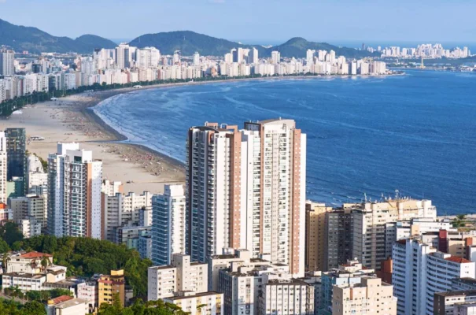
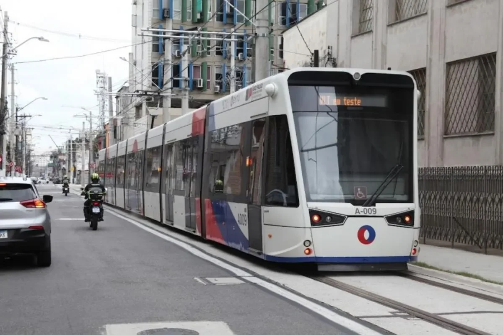

Baixada Santista

Abriga o principal ponto de escoamento da produção brasileira, o Porto de Santos;
Está estrategicamente situada a menos de 100 km da capital São Paulo e das indústrias da região do ABC;
Possui excelentes conexões de transporte viário (Sistema Anchieta Imigrantes e Rodovia Manuel da Nóbrega).
A Região Metropolitana da Baixada Santista está localizada no litoral paulista sendo sede do Porto de Santos, o maior e mais importante complexo portuário da América do Sul, em torno do qual se desenvolveu a economia regional. É a região paulista que possui o menor número de municípios (nove), ocupando apenas 1% do território estadual, e a segunda maior densidade demográfica do Estado.

A região está situada a menos de 100 km da capital São Paulo e das indústrias da região do ABC, além de possuir excelentes conexões de transporte viário através do Sistema Anchieta Imigrantes, Rodovia Manuel da Nóbrega e a BR-101(que liga a Baixada Santista ao município do Rio de Janeiro), duas linhas ferroviárias que atravessam todo o Estado de São Paulo desembocam no Porto de Santos, interligando a região a municípios importantes como São Paulo, Campinas, Bauru e Araraquara. O Porto de Santos faz a conexão de cargas e passageiros com o resto do Brasil e com o mundo.
| Municípios | População | Área | Densidade Demográfica |
|---|---|---|---|
| Santos | 440.965 | 281.033 km² | 1 491,4 hab./km² |
| Praia Grande | 368.539 | 147,1 km² | 2.338,32 hab/km² |
| São Vicente | 329.911 | 148 km² | 2.226,86 hab/km² |
| Cubatão | 112.476 | 143,649 km² | 787,21 hab/km² |
| Guarujá | 287.634 | 144,794 km² | 1.986,5 hab/km² |
| Mongaguá | 61.951 | 142,755 km² | 433,97 hab/km² |
| Itanhaém | 112.476 | 601,018 km² | 186,93 hab/km² |
| Peruíbe | 68.352 | 326,216 km² | 209,53 hab/km² |
| Bertioga | 64.188 | 491,5 km² | 130,58 hab\km² |